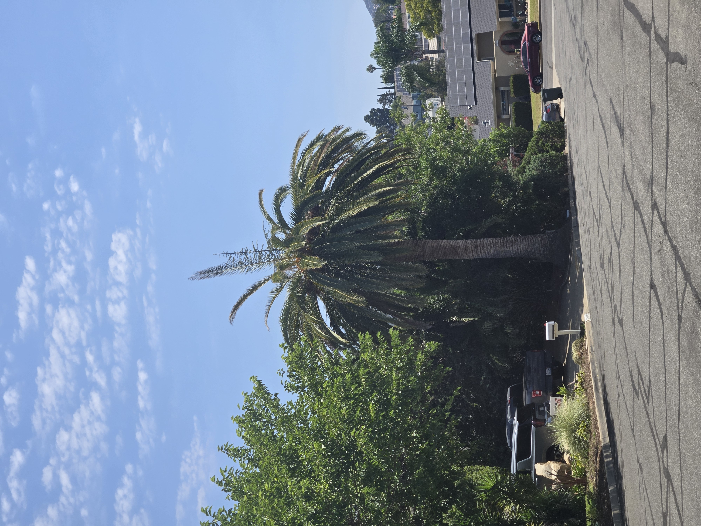

Stewardship & Palm Health
Recurring hands-on care, health observation, fertilization, watering or irrigation guidance, and attention to changes over time.
Explore this serviceOwner-led · San Diego County · Based in Old Escondido
San Diego Palm Protection provides owner-led palm stewardship for managed properties in San Diego County.
Palm-specific condition documentation · Scheduled monitoring · Protection and treatment · Contractor coordination · Long-term planning
Owner-operated • California QAL, Category B
Owner-Led Palm Stewardship
John Krause, Owner
California Pest Control Business License active
California Qualified Applicator License No. 175295
Category B — Landscape Maintenance
Insured
Palm assessment and monitoring, preventive palm protection, pesticide treatment when appropriate, fertilization and palm-health stewardship, documentation and portfolio management, decline response, and contractor coordination.
Commercial & managed properties
For an HOA, apartment community, senior-living property, hotel, club, school, church, campus, commercial site, historic property, or large estate, I can evaluate the palms as a portfolio and build a practical stewardship plan for their health, protection, appearance, documentation, and long-term management.
One owner-led relationship connects palm health observation, nutrition, watering and irrigation concerns, preventive treatment, recurring visits, condition records, budgeting support, and coordinated response.
Owner-Led Palm Stewardship
I provide recurring, owner-led stewardship for individual palms and multi-palm properties. Depending on the property and agreed scope, that can include health observation, preventive protection, fertilization, watering and irrigation guidance, treatment when appropriate, photographic documentation, planning, and coordination when pruning, removal, or replacement becomes necessary.
Recurring hands-on care, health observation, fertilization, watering or irrigation guidance, and attention to changes over time.
Explore this servicePreventive protection, South American palm weevil awareness, treatment when appropriate, and early response to visible decline.
Explore this servicePalm inventories, condition records, photographs, priorities, recurring schedules, budgeting support, and continuity across a property.
Explore this serviceDecline response, pruning or removal coordination, replacement planning, sourcing, logistics, and long-term landscape continuity.
Explore this serviceWho I work with
The work is shaped by the palms, the property, and the decisions that need to be made.
For managed properties, I can build a practical stewardship plan across the palm portfolio—documenting conditions, identifying priorities, scheduling recurring care, supporting budget decisions, and maintaining continuity from one visit to the next.
Discuss a multi-palm propertyFor homeowners and estate owners, stewardship means having one knowledgeable person consistently looking after the palms rather than addressing each concern as an isolated event.
Tell me about your palmLocal and direct
The owner handles the property visit, photographs, written findings, and follow-up questions.
The person you speak with is the person who looks at your palms. That matters when small details and property history need to carry through to the report.

Canary Island date palms
I have dealt with South American palm weevil activity on my own Old Escondido property. That firsthand experience is one reason I pay close attention to crown change and to photographs that show when a change began.

A photograph cannot diagnose a pest, but it can show whether the crown is changing and help me assess the next step.
Ongoing stewardship
Documentation supports the care. It connects current condition, treatment and work history, recurring priorities, and the next responsible decision.
Identify the palms, visible conditions, site needs, access, and relevant history.
Set priorities for health observation, fertilization, irrigation guidance, preventive protection, treatment, and return visits.
Maintain useful photographs, condition notes, treatment and work histories, and portfolio priorities.
Coordinate the next step when decline, contractor work, removal, replacement, or another specialist becomes relevant.
View a sanitized sample palm assessment (PDF, opens in a new tab)
Scope and pricing
Palm count, condition, access, treatment requirements, visit frequency, coordination needs, and the records required all affect the work and price.
I will confirm the agreed scope and price before the work begins.
Commercial proof
The sanitized Old Escondido example shows how multiple palms, dated photographs, visible observations, priorities, and limits can be organized without exposing private client information.
View the representative palm documentation example (PDF, opens in a new tab) See more Field Work
Field work
The Field Work page and Palm Journal show local palms, dated observations, and sample reporting without exposing private client information.
Private inquiry
Tell me about the property, the palms, and what you are responsible for. I work with managed palm portfolios, large estates, and homeowners protecting important mature palms.